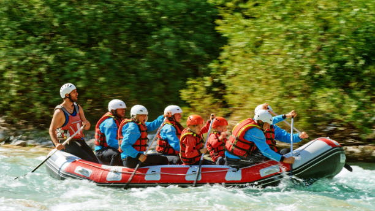
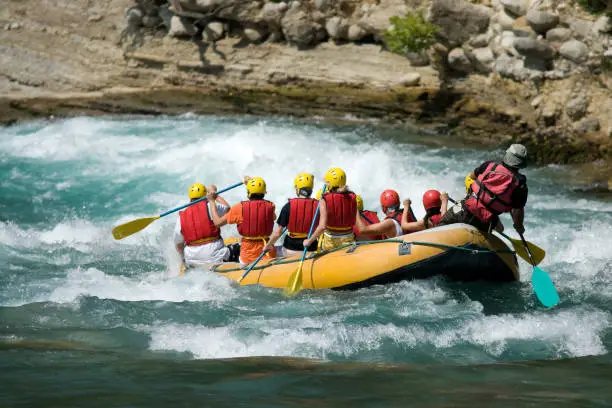
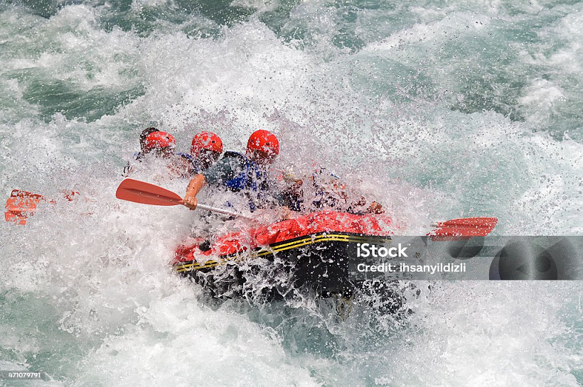
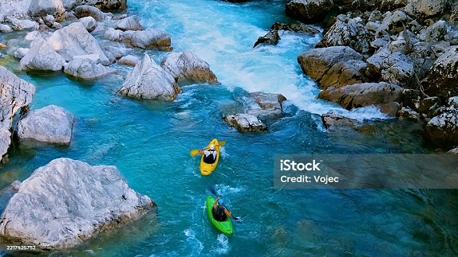
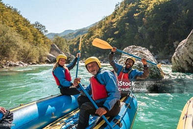
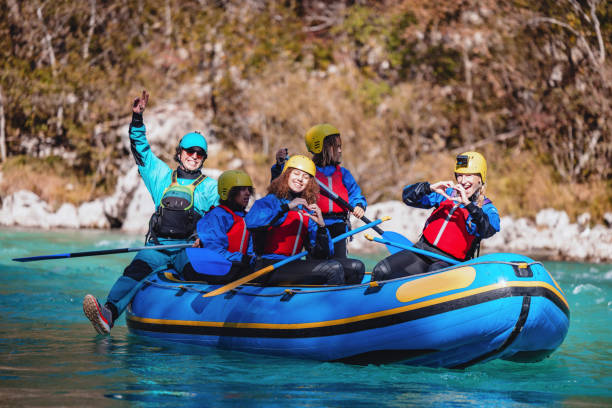

Our mission at Rapid Riders is to deliver unforgettable white water rafting experiences that combine safety, excitement, and environmental stewardship. We believe every adventure should leave you with lasting memories and a deeper appreciation for nature's wild rivers.

Rapid Riders
History
Founded in 2010 by passionate river guides, Rapid Riders began as a small operation with two rafts and a dream to share the thrill of white water rafting. Over the past decade, we've grown into one of the region's most trusted rafting companies, guiding thousands of adventurers through Class II-V rapids. Our commitment to safety and guide training has earned us multiple industry awards.

Today, we operate on three major river systems and continue to innovate while maintaining the personal touch that defined our early years. From beginner-friendly floats to advanced white water expeditions, we have something for everyone. Join us for an adventure you'll never forget and experience the thrill of riding the rapids with the best in the business!
Adventure Awaits You!




